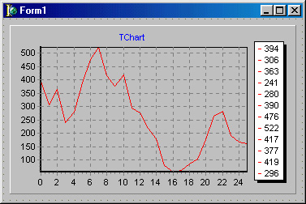
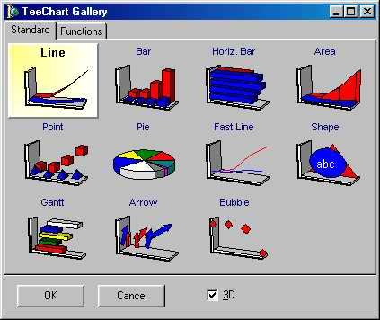

TChart - построитель графиков
Этот компонент предназначен для графического представления числовых данных. На рис. 18.18 показан пример использования компонента.
Компонент содержит большое количество специфичных свойств, событий и методов - их детальное рассмотрение потребовало бы значительного объема книги и здесь не приводится.
Общая схема его использования такова.
Вначале компонент помещается на форму. После щелчка по нему правой кнопкой мыши вызывается его вспомогательное меню, которое в числе прочих содержит опцию Edit chart - с помощью этой опции вызывается многолистное окно редактора компонента. Закладка Series этого окна открывает доступ к так называемым сериям - объектам класса TChartSeries, которые, собственно, и будут отображать наборы чисел в графическом виде. Чтобы отобразить данные, нужно создать как минимум одну серию - для этого следует в окне редактора нажать кнопку Add и выбрать подходящий тип графика (рис. 18.19).
После закрытия редактора компонент будет содержать примерный вид графика. Однако его реальный вид зависит от фактических данных, которые создаются в работающей программе и добавляются к серии с помощью методов AddX, AddY или AddXY объекта TChartSeries (получить доступ к нужной серии можно с помощью индексированного свойстваSeriesList - первая созданная серия имеет индекс 0, вторая 1 и т. д.). Например, такой обработчик события OnActivate формы создал график, показанный на рис. 18.18:
procedure TForm1.FormActivate(Sender: TObject);
var
k: Integer;
begin
for k := 0 to 20 do
Chartl.SeriesList[0].AddXY(k,sin(k*pi/10),' ',clRed) ;
end;

Рис. 18.18. Пример использования компонента Tchart

Рис. 18.19. Возможные виды графиков компонента TChart
Компонент впервые появился в версии 3.
Задание: Разработайте проект, в котором на форму поместите таблицу StringGrid, которую заполняет пользователь. По данным из таблицы постройте диаграмму и график.